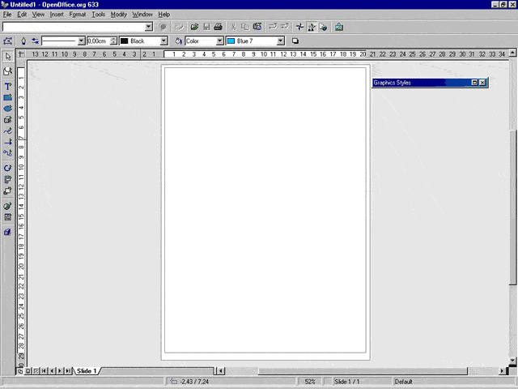
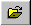
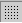
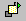

Crearea unui document cu forme geometrice simple,
schimbarea proprietatilor (culoare, dimensiune, pozitie ...)
si tiparirea rezultatului.
furnizat de
Proiectul de Documentatie OpenOffice.org
Cuprins:
- Scurta introducere. O introducere a instrumentelor de desenat din OpenOffice.org.
- Vreau sa desenez, acum! Incepeti sa va exprimati inspiratia artistica.
- Modificati desenele. Schimbati proprietatile (culoare, dimensiune, pozitie, ...)
- Tipariti. Puneti rezultatul eforturilor pe hartie.
- 1 Depanarea tiparirii. Se intimpla ceva rau cand incercati sa tipariti? Atunci consultati aceasta sectiune.
- Merite. Despre autori si alte informatii utile.
1. Scurta introducere. O introducere a instrumentelor de desenat din OpenOffice.org
In 1937, marele pictor spaniol Pablo Picasso uimea lumea cu capodopera sa fascinanta si dramatica: Guernica. Din fericire, astazi nu mai e nevoie sa fim pictori extraordinari, inscrisi in cataloagele de arta pentru a putea crea desene si alte documente grafice de mare calitate. Programele de grafica moderne sunt suficiente. Printre aceste aplicatii, OpenOffice.org Draw face munca noastra creativa mai usoara si chiar mai interesanta.
Inainte de a incepe sa invatati functiile elementare din Draw, trebuie sa aveti o privire generala asupra suprafetei de lucru si instrumentelor pe care le veti folosi. Cand deschideti un document nou in Draw, va fi afisata o fereastra ca aceasta:

Chiar sub bara de titlu a fereastrei (cea cu logo-ul in forma de fluture) puteti vedea trei bare de comenzi. Aceste sunt, in ordinea aparitiei:
- Bara de meniuri
- Bara de functii
- Bara de obiecte
Bara de meniuri contine meniurile principale disponibile in Draw. Bara de functii afiseaza icon-urile pentru functiile principale, cum ar fi Open, Save, Copy, Cut, Paste. Bara de obiecte include unele instrumente specifice pentru desenare care pot fi folosite pentru a modifica felul in care arata un obiect atunci cand este selectat (stilul de linie, culoarea si grosimea; stilul si culoarea de umplere).
Indicatie: Cu toate ca multi oameni cred ca aceste bare nu pot fi modificate, aceasta nu este absolut adevarat. De fapt, puteti modifica icon-urile si functiile care apar pe ele in conformitate cu nevoile dumneavoastra, apasand butonul dreapta al mouse-ului pe bara principala sau pe bara de obiecte. Va fi afisat un meniu contextual. Selectati 'Configure...' sau 'Customize...' pentru a modifica continutul barelor. In plus, selectand 'Visible Buttons' puteti face unele butoane active/inactive. Din acelasi meniu contextual puteti activa o alta bara, denumita Bara de optiuni care implicit este inactiva. Aceasta contine niste butoane suplimentare care permit accesul la instrumente folositoare pentru pozitionare si modificare.
In partea stanga a ferestrei de desenare se afla bara principala de instrumente. Aici se afla instrumentele necesare pentru a realiza documentul in Draw. Functiile de baza ale acestei bare vor fi discutate in cuprinsul acestui document. In sfarsit, in partea de jos se afla bara de informatii. Aceasta afiseaza informatii utile, cum ar fi: locatia cursorului in cadrul documentului Draw (exprimata in coordonate), procentul de zoom, numele template-ului etc.
Cele doua bare numerotate pe care le vedeti pe marginea suprafetei documentului sunt riglele vericala si orizontala. Puteti schimba unitatile de masura ale acestora cu un click dreapta pe ele pentru a afisa meniul contextual unde pot fi alese alte unitati de masura. Nu va trebuie? Atunci dezactivati-le, selectand View-Rulers din bara de meniuri. Pentru a le face din nou vizibile, pur si simplu repetati aceeasi optiune din meniu, astfel incat elementul 'Rulers' sa aiba un simbol de selectie in dreptul sau.
2. Vreau sa desenez, acum! Incepeti sa va exprimati inspiratia artistica.
Daca ati sarit direct la aceasta sectiune fara a o citi pe precedenta, ar fi o idee buna sa mergeti inapoi si sa o cititi, deoarece acolo sunt definiti termeni care vor fi folositi incepand din acest punct. Oricum, pentru cei nerabdatori, vom discuta acum despre cum sa trasam forme geometrice simple intr-un document Draw!

Figura pe care o vedeti in partea dreapta ilustreaza bara principala de instrumente. Instrumentele de desenare pe care le veti folosi in OpenOffice.org Draw se gasesc aici. Pentru a activa o unealta specifica, apasati pe icon-ul sau. Fiecare buton al unui icon este de tipul 'stare', astfel incat atunci cand eliberati butonul mouse-ului, butonul insusi isi va schimba starea de selectie, astfel incat sa puteti vedea corect care unealta este selectata. Incercati sa selectati unealta pentru dreptunghiuri... Este al patrulea icon incepand de sus...
Acum, miscati cursorul mouse-ului. Veti observa ca s-a transformat intr-o cruce cu un mic dreptunghi. Pentru a trasa primul dumneavostra desen, urmati aceasta procedura:
- Apasati cu mouse-ul si tineti in continuare apasat oriunde pe suprafata documentului. Acest punct va fi coltul din stanga-sus al dreptunghiului.
- Trageti cu mouse-ul si apoi eliberati butonul stang la pozitia dorita.
Eureka! Dreptunghiul dumneavoastra este afisat in toata maretia sa! Privind la bara principala de instrumente, puteti vedea ca instrumentul pentru dreptunghiuri nu mai este selectat. Are aceasta comportare deoarece ati apasat pe el o singura data. Daca ati fi apasat de doua ori (dublu click), instrumentul pentru dreptunghiuri ar fi ramas selectat pana alegeati un alt instrument. Deci: o apasare simpla inseamna o actiune de desenare, iar o apasare dubla inseamna actiuni multiple de desenare.
Indicatie: Sigur ati observat o alta proprietate a barei principale de instrumente: mai multe dintre icon-uri au un mic triunghi verde in partea stanga. Acest simbol arata ca fiecare instrument are o bara mobila. Pentru a o afisa, apasati pe icon-ul dorit si tineti butonul mouse-ului apasat pentru cateva secunde. Trebuie sa apara bara mobila. O puteti muta oriunde pe suprafata documentului, tragand-o. Aceasta este o cale utila de a trasa mai multe desene de acelasi tip, dar cu proprietati diferite. Pentru a o inchide si a trece inapoi la bara principala de instrumente, pur si simplu apasati be butonul de inchidere din coltul din stanga-sus al barei mobile.
E usor sa desenezi un dreptunghi. De asemenea si un patrat. Puteti crea unul selectand instrumentul pentru patrate din bara mobila pentru dreptunghiuri, si apoi repetati pasii de la crearea dreptunghiului. Nimic mai usor! Bineinteles, puteti folosi OpenOffice.org Draw pentru a desena lucruri mai complexe, cum ar fi: cerc, elipsa sau sectoare de cerc. Pentru asemenea desene trebuie sa:
- Selectati instrumentul pentru elipse din bara principala de instrumente (este chiar sub instrumentul pentru dreptunghiuri), tinand apasat butonul mouse-ului cateva secunde, pentru a fi afisata bara mobila.
- Alegeti forma pe care doriti sa o desenati.
- Apasati si trageti cu mouse-ul deasupra suprafetei documentului.
- Eliberati butonul mouse-ului.
In afara de aceste procedee comune, mai sunt alte actiuni specifice care trebuiesc efectuate pentru a desena sau modifica contururile pe care le puteti alege de pe bara mobila de eclipse. Iata-le:
- Cerc: Nu e nevoie de nimic special. Cu cat trageti mai departe de mouse inainte de a-l elibera, cu atat cercul va fi mai mare.
- Elipsa: Miscand de mouse orizontal sau vertical in timp ce il trageti, micsorati sau mariti razele elipsei.
- Sector de elipsa: Aceasta forma este foarte asemanatoare cu o elipsa normala, dar o parte din ea nu va fi desenata, creand o zona goala, asemanatoare cu o felie de tort. Urmati acesti pasi:
- Selectati instrumentul 'Ellipse pie' din bara mobila de elipse. Desenati ca si cum ar fi o elipsa normala.
- Cand eliberati butonul mouse-ului, veti vedea elipsa, dar aceasta nu reprezinta desenul final. De fapt, este vizibila o linie in interiorul elipsei: raza. Puteti deplasa aceasta raza miscand mouse-ul in pozitia in care vreti sa trasati inceputul zonei care va fi goala. Apasati pe buton pentru a confirma pozitia dorita.
- Repetati pasul 2 pentru a determina pozitia de sfarsit a zonei goale.
- Sector de cerc: Dupa ce ati selectat instrumentul 'Circle pie' din bara mobila de elipse si ati creat cercul, urmati pasii 2 si 3 de la procedura pentru 'Sector de elipsa'.
- Segment de elipsa:Acesta reprezinta o sectiune dintr-o elipsa
- Selectati instrumentul 'Ellipse segment' din bara mobila de elipse. Desenati ca si cum ar fi o elipsa normala.
- Raza va fi inca vizibila. Apasati o data pe butonul mouse-ului pentru a fixa primul punct al liniei care va taia elipsa.
- Apasati a doua oara pentru a fixa al doilea punct al liniei care va taia elipsa.
- Segment de cerc: Dupa ce ati selectat instrumentul 'Circle segment' din bara mobila de elipse si ati creat cercul, urmati pasii 2 si 3 de la procedura pentru 'Segment de elipsa'.
3. Modificati desenele: Schimbati proprietatile (culoare, dimensiune, pozitie, ...)
Daca ati urmat toate procedurile prezentate in sectiunea precedenta, acum probabil ca aveti prea multe desene in documentul Draw. Cata confuzie! Haideti sa cream un document nou, alegand File-New-Drawing din bara de meniuri.
Desenati un dreptunghi pe noua pagina goala. Priviti-l. Este umplut cu o culoare albastru deschis si are cateva mici patratele verzi pe maargine. Albastru deschis este culoarea implicita pentru umplere, iar patratelele verzi sunt ghidajele pentru modificarea dimensiunii si arata ca dreptunghiul este selectat. Albastru deschis este cu siguranta o culoare frumoasa, dar unii dintre dumneavoastra poate doresc sa o schimbe.
Exista mai multe metode pentru a schimba culoarea unui obiect. Cele mai des intalnite sunt:
- Selectati Format-Area din bara de meniuri. In modulul Area al ferestrei de dialog aparute, alegeti culoarea pe care doriti sa o folositi.
- Apasti cu butonul din dreapta al mouse-ului pe obiectul selectat pentru a ii afisa meniul contextual specific. Apoi alegeti: 'Area...' din meniu. In modulul Area al ferestrei de dialog aparute, alegeti culoarea pe care doriti sa o folositi.
- Alegeti culoarea dorita din caseta de selectie derulanta 'Area/Style Filling' care se afla pe bara de obiecte.
Tineti cont ca orice metoda ati folosi pentru a schimba culoarea unui obiect, obiectul insusi trebuie sa fie selectat. Pentru aceasta trebuie doar sa apasati cu mouse-ul pe el.
Indicatie: persoanele care deseneaza des pentru internet au obiceiul de a folosi culori exprimate in valori hexadecimale sau nume de culori pentru web. O paleta de culori sigura pentru web este o paleta ce contine numai culor care vor fi afisate intr-un mod aproape identic de diverse browsere ruland pe diverse platforme. Pentru a folosi aceasta facilitate, urmariti pasii urmatori:
- Desenati un obiect pe pagina documentului.
- Apasati pe acest obiect pentru a-l selecta.
- Apasati cu butonul dreapta al mouse-ului pe el pentru a afisa meniul contextual.
- Alegeti elementul 'Area...'.
- In fereastra ce va apare, selectati modulul 'Colors'.
- Apasati icon-ul 'Load Color List'.
- Alegeti fisierul html.soc si apasati 'OK'. (cale standard: OpenOffice60/user/config/)
Culoarea este numai una dintre proprietatile obiectelor pe care le puteti modifica. Apasati cu mouse-ul intr-o portiune goala de pe suprafata documentului, pentru a deselecta dreptunghiul. Acum priviti-l din nou. Puteti observa ca conturul sau este constituit dintr-o linie neagra subtire. Puteti schimba stilul si culoarea acestui contur!
Inca o data, o actiune poate fi efectuata prin mai multe metode (nu uitati sa selectati obiectul apasand pe el):
- Alegeti din bara de meniuri Format-Line. In modulul Line al ferestrei de dialog ce va apare alegeti proprietatile dorite pentru tipul de linie.
- Apasati cu butonul drepta pentru a afisa meniul contextual. Apoi alegeti din acest meniu 'Line...' . In modulul Area al ferestrei de dialog aparute alegeti culoarea pe care vreti sa o folositi.
- Alegeti culoarea si stilul preferate din casetele de selectie derulante 'Line Style' si 'Line Color' aflate in bara de obiecte.
Pana in acest moment am vorbit despre functii referitoare la felul de desenare al unui obiect. Acum vom continua cu descrierea modului in care se pot modifica pozitia si dimensiunea unui obiect. Selectati instrumentul pentru dreptunghiuri din bara principala de instrumente si desenati un al doilea dreptunghi intr-o zona libera din documentul dumneavoastra. Noul dreptunghi va fi selectat automat cand eliberati butonul mouse-ului. S-a pomenit deja despre patratelele verzi, si anume ghidajele pentru modificarea dimensiunii. Le puteti folosi pentru a modifica dimensiunea obiectului selectat dupa cum urmeaza:
- Aduceti cursorul mouse-ului deasupra unui patratel verde. Cursorul se va transforma intr-o linie cu sageti la capete. Orientarea sagetilor arata in ce directie se poate modifica dimensiunea obiectului. Patratelele din colturi permit modificarea in acelasi timp a inaltimii si a latimii, iar cele din mijlocul laturilor permit modificarea doar a uneia dintre aceste dimensiuni (depinzand de ce patratel alegeti).
- Apasati pe unul dintre patratele, tinand butonul mouse-ului apasat in continuare. Trageti de mouse pana obiectul ajunge la dimensiunile dorite, apoi eliberati butonul.
Cand trageti de unul dintre ghidajele din mijlocul laturilor puteti totusi modifica in mod proportional inaltimea si latimea. Pentru aceasta, trebuie sa tineti apasata tasta [SHIFT] in timp ce efectuati operatia.
Acum sunteti capabili sa modificati dimensiunea dreptunghiului, dar poate doriti sa ii modificati de asemenea si pozitia. Puteti realiza acest lucru dupa cum urmeaza:
- Asigurati-va ca aveti un desen selectat.
- Deplasati cursorul mouse-ului deasupra sa. Acesta se va schimba sub forma unei cruci cu patru sageti.
- Apasati pe obiect pentru a il prinde.
- Trageti de mouse pana la noua pozitie, apoi eliberati butonul.
Indicatie: in unele proiecte s-ar putea sa aveti nevoie sa pozitionati sau redimensionati obiecte mai precis decat o puteti face pe cale vizuala. In OpenOffice.org puteti efectua aceasta operatiune apasand cu butonul dreapta al mouse-ului si alegand din meniul contextual 'Position and Size'. In fereastra de dialog aparuta veti putea modifica dimensiunile si pozitia folosind unitatile de masura implicite. Alternativ, puteti imbunatati precizia acestor actiuni prin afisarea unei grile punctate ca fundal pentru document. Apasati cu butonul dreapta pe o bara de comenzi pentru a afisa meniul contextual, apoli selectati 'Options Bar'. In noua bara care trebuie sa apara chiar dedesubtul barei de informatii, apasati pe icon-ul 'Display Grid' . Proprietatile grilei pot fi modificate alegand Tools-Options-Drawing-Grid din bara de meniuri.
Cand incepeti sa modificati deene, este posibil sa descoperiti ca un obiect se suprapune peste un altul, dar nu in ordinea dorita. Bineinteles ca puteti schimba ordinea in care obiectele sunt stratificate. Iata cele doua cai principale prin care se poate realiza acest lucru:
- Apasati pentru cateva secunde pe icon-ul 'Arrange'  din bara principala de instrumente, astfel incat bara mobila 'Arrange' sa apara si apoi folositi instrumentul specific care va este necesar.
- Apasati cu butonul dreapta pe un obiect selectat pentru a ii afisa meniul contextual, apoi alegeti sub-elementul corect al elementului 'Arrange'.
4. Tipariti. Puneti rezultatul eforturilor pe hartie.
Exista diverse modalitati prin care puteti folosi desenele create cu OpenOffice.org. Cea mai traditionala metoda este sa le tipariti. Deoarece sistemul de tiparire poate varia substantial de la o platforma la alta, aceasta documentatie va descrie numai comenzile pentru tiparire pentru platforma Microsoft Windows. Oricum, multe dintre ferestrele de dialog ale OpenOffice.org sunt aceleasi indiferent de sistemul de operare.
Inainte de a incerca sa tipariti un document este o idee buna sa il salvati pe hard disk. Daca documentul nu are deja un nume, alegeti File-Save as... din meniul principal. Daca l-ati salvat deja inainte, este suficient sa apasati [CTRL]+S pe tastatura. Acum munca dumneavostra nu se va pierde orice s-ar intampla in cursul operatiei de tiparire.
Puteti alege imprimanta pe care o veti folosi selectand din bara de meniuri File-Printer Settings... . In fereastra de dialog trebuie sa fie deja prezent numele imprimantei implicite in caseta de selectie derulanta 'Name'. Pentru a modifica setarile driver-ului de imprimanta apasati butonul 'Properties'.
Acum sunteti gata pentru a tipari. O puteti face direct apasand icon-ul 'Print File directly'  de pe bara de functii. Alternativ, puteti face unele modificari finale prin intermediul ferestrei 'Print Dialog'. Pe aceasta o puteti accesa astfel:
de pe bara de functii. Alternativ, puteti face unele modificari finale prin intermediul ferestrei 'Print Dialog'. Pe aceasta o puteti accesa astfel:
- alegand File-Print din bara de meniuri
- apasand [CTRL]+P pe tastatura
Fereastra 'Print Dialog' arata astfel:

Partea superioara a ferestrei este identica cu cea de la setarile pentru imprimanta si puteti face modificari in acelasi fel. Singura adaugire este casuta 'Print to file'. Daca bifati aceasta optiune, va fi afisat un dialog 'Save as...' care va va permite sa alegeti numele fisierului in care va fi tiparit documentul dumneavoastra. Aceasta functie este utila in mod special daca doriti sa tipariti un document creat pe un laptop care nu are atasata imprimanta sau sa transferati un asemenea fisier pe un calculator aflat in afara retelei dumneavoastra si sa il tipariti local.
Selectia 'Print range' permite sa alegeti care dintre paginile documentului vor fi tiparite, iar selectia 'Copies' poate fi folosita pentru a modifica numarul de exemplare in care va fi tiparit.
In coltul din stanga-jos, se afla butonul 'Options'. Apasand pe el, va fi afisata fereastra de dialog 'Options'. Aici veti putea modifica optiuni suplimentare, cum ar fi: calitatea imprimarii, caracteristicile paginii si note de subsol (numele paginii, data, ora).
In sfarsit, apasati butonul 'OK' din fereastra de dialog pentru tiparire pentru a obtine documentul tiparit.
4.1 Depanarea tiparirii. Se intimpla ceva rau cand incercati sa tipariti? Atunci consultati aceasta sectiune.
Sectiunea de fata, la fel ca precedenta, descrie cazul in care suita OpenOffice.org ruleaza pe o platforma Microsoft Windows. Cele mai multe sugestii sunt aplicabile si altor platforme, dar trebuie sa luati in considerare diferentele intre sistemele de tiparire.
A. Imprimanta nu tipareste de loc:
- Acest raspuns poate parea absurd, dar ati verificat ca imprimanta este pornita? De multe ori cele mai simple lucruri sunt uitate primele.
- Verificati legatura fizica dintre imprimanta si calculator. Sub un sistem de operare Windows, problemele de tiparire sunt generate mai degraba de echipamentele hardware decat de software.
- Poate imprimanta dumneavostra nu a fost selectata ca imprimanta implicita. Deschideti fereastra de dialog pentru tiparire, selectand din bara de meniuri File-Printer Settings... si verificati daca imprimanta este afisata in caseta de selectie derulanta 'Name' . Schimbati imprimanta selectata daca este necesar.
- Verificati ca nu este bifata casuta 'Print to file' in fereastra de dialog pentru tiparire. In caz contrar, rezultatul va fi trimis intr-un fisier in loc de imprimanta.
B. Culorile rezultate din tiparire nu sunt aceleasi cu cele afisate pe ecran:
Imprimantele color moderne folosesc un amestec de 4 tipuri de cerneala (sau 6 in cele mai noi) pentru a reproduce colorile pe care le putem vedea cu ochiul in mod normal. In OpenOffice.org Draw, pentru a specifica exact procentajul in care sunt combinate culorile trebuie sa:
- Apasati pe obiectul a carui culoare doriti sa o modificati. Acesta va fi selectat.
- Apasati cu butonul dreapta al mouse-ului si alegeti din meniul contextual 'Area...'.
- In fereastra aparuta mergeti la modulul 'Colors'.
- Selectati CMYK din caseta de selectie derulanta 'Color System'.
- Modificati procentajele pentru valorile CMYK in casetele respective.
- Apasati butonul 'OK'. Veti fi intrebati daca doriti sa modificati culoarea existenta sau sa adaugati una noua la paleta de culori. Alegeti dupa cum doriti.
Alternativ, puteti folosi/modifica o paleta CMYK predefinita:
- Repetati pasii 1, 2 si 3 de mai sus.
- Apasati icon-ul 'Load Color List'.
- Selectati fisierul cmyk.soc si apasati butonul 'Open'. (cale standard: OpenOffice60/user/config/)
- Inchideti fereastra apasand butonul 'OK'.
C. Desenele aflate aproape de marginea de sus sau de jos a paginii nu sunt tiparite corect:
Probabil ati definit marginile documentului Draw prea aproape de marginile de tiparire ale imprimantei. Trebuie sa:
- Verificati in manualul imprimantei cat de mare este zona de tiparire a acesteia.
- Alegeti din bara de meniuri Format-Page....
- In modulul 'Page' din fereastra 'Page Setup', modificati marginile superioara si inferioara dupa dimensiunile pe care le-ati gasit in manualul imprimantei. Daca nu mai aveti manualul imprimantei, incercati o valoare mai mare de 2,5 cm. Aceasta trebuie sa mearga cu cele mai multe imprimante.
- Apasati butonul 'OK'
Nu uitati sa aranjati desenul, pentru a va asigura ca toate obiectele se incadreaza in noile margini ale paginii.
Indicatie: OpenOffice.org Draw este o aplicatie puternica, dar nu poate imbunatati calitatile echipamentelor dumneavoastra. Daca veti gasi calitatea documentului tiparit nesatisfacatoare, considerati de asemenea si calitatea echipamentelor folosite. Mai ales daca vreti sa tipariti documente ce contin fotografii sau imagini cu milioane de culori, ar trebui sa aveti o imprimata fotografica (Photo printer) si sa folositi hartie speciala.
5. Merite
Autor Original: Gianluca Turconi
Recunoasteri: Multumiri calduroase lui James Treleaven pentru colaborarea valoroasa.
Integrare: N/A
Ultima modificare:11 februarie 2001
Contact organizational: OpenOffice.org Documentation Project http://whiteboard.openoffice.org/doc/index.html
Versiunea in limba romana:
Traducere: Nicu Buculei
Ultima modificare: 10 iulie 2003
Contact organizational: Subproiectul OpenOffice.org dedicat publicului vorbitor de limba romana http://ro.openoffice.org/